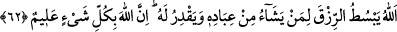

61. Andolsun ki onlara: “Gökleri ve yeri yaratan, güneşi ve ayı buyruğu altında
tutan kimdir?” diye sorsan, mutlaka, “Allah” derler. O halde nasıl (haktan) çevrilip
döndürülüyorlar?
“Andolsun ki onlara:” yâni Mekke halkına “Gökleri ve yeri yaratan, güneşi ve ayı”
kulların menfaati için “buyruğu altında tutan kimdir?” diye sorsan,”
“
(teshîr)”, bir şeyi birinin emri altına vermek, başkasını ona boyun eğdirmek,
onun istek ve arzusuna uymaya zorlamaktır.
“Mutlaka “Allah” yarattı, “derler.” Çünkü bunun inkâr edilmesi mümkün değildir.
Zira fânî (mümkün) varlıkların, varlığı kendinden olan Zât’ın (Vâcibü’l-vücûd)
birliğine (vahdâniyete) götürdüğü düşüncesi akıllarda yerleşmiştir.
“O halde nasıl (haktan) çevrilip döndürülüyorlar?”
Bak onlar Allah’ın tevhîdinden nasıl döndürülüyorlar, çevriliyorlar...
“
(Efk)”, çevirmek ve döndürmek demektir. “
(İfk)” kelimesi ise doğru ve hak
olan yönden döndürülen her şeye denir.
Buna göre âyetin mânâsı şöyledir: Onlar Allah’ın yeri ve göğü yaratması, güneş ve ayı
kulların menfaatine musahhar kılması konusunda O’nun birliğini ikrar ettikleri halde,
ulûhiyette O’nu birlemekten ve tevhidi ikrardan nasıl döndürülüyorlar?
Bu, ilmin gereği ile amel etmeyi terk ettikleri için bir inkâr ve uzak görme ifâdesidir;
onları azarlama, başlarına vurma ve onların bu hallerine şaşma ve durumlarını
yadırgamadır.
62. Allah rızkı kullarından dilediğine bol bol verir, dilediğine de kısar. Şüphesiz
Allah her şeyi hakkıyla bilendir.
“Allah rızkı kullarından” mü’min olsun, kâfir olsun “dilediğine bol bol verir,”
Yeryüzü O’nun herkese açık sofrasıdır
Bu hân-ı yağmâ/yağma sofrasında dost düşman fark etmez
“dilediğine de kısar.” ifâdesindeki “ (ona)” kelimesi müphemdir. Bu zamir, rızkı
daraltılana da genişletilene de gidebilir. Genişletme ve daraltma peş peşedir; rızkı
genişletilen kimse, peşinden daraltılan kimse de olabilir.
Hasan (Basrî) (r.h.) der ki: Allah, düşmanını aldatmak için rızkını açar; dostuna nazar
etmek için de rızkını daraltır. Allah’ın nazar ettiği kimseye müjdeler olsun!
“Şüphesiz Allah her şeyi hakkıyla bilendir.” Yani, rızkını genişletmeye lâyık olanı